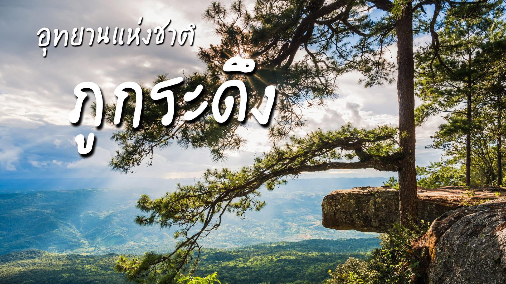
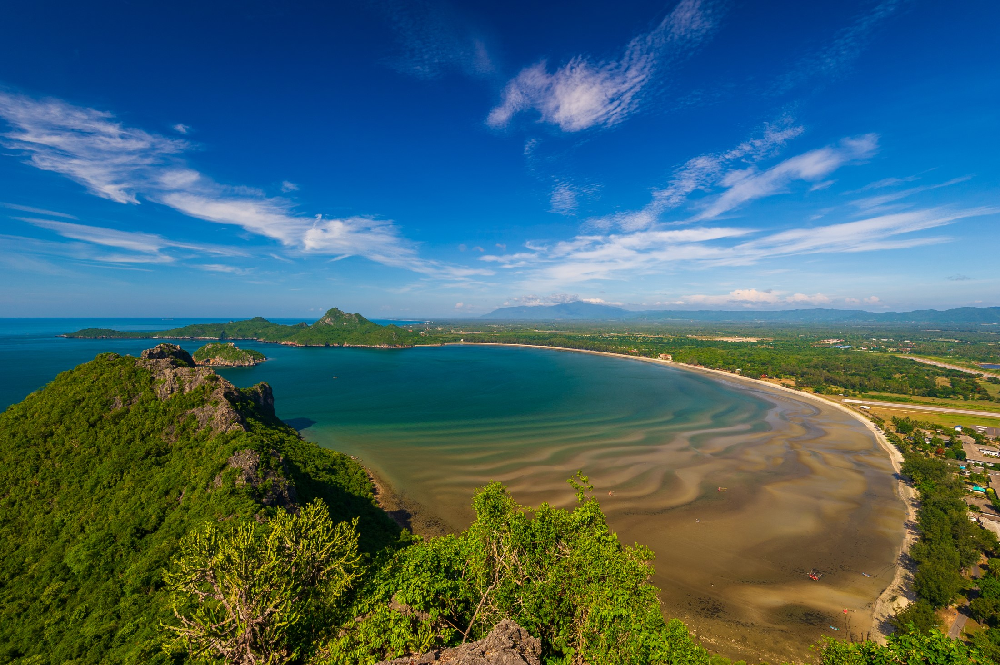
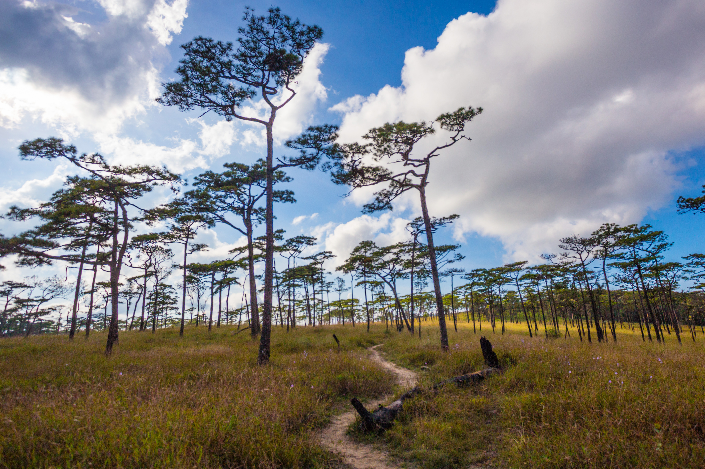
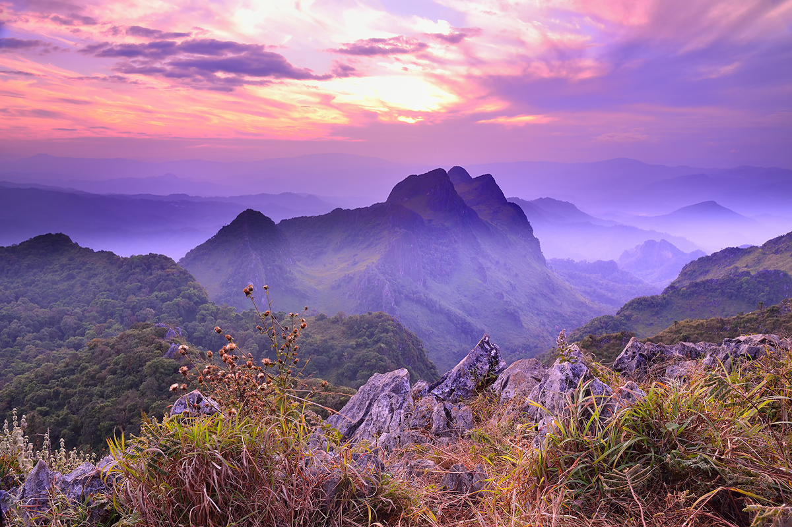
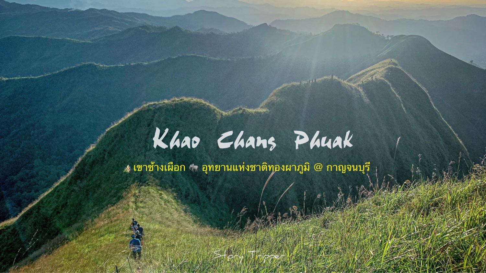
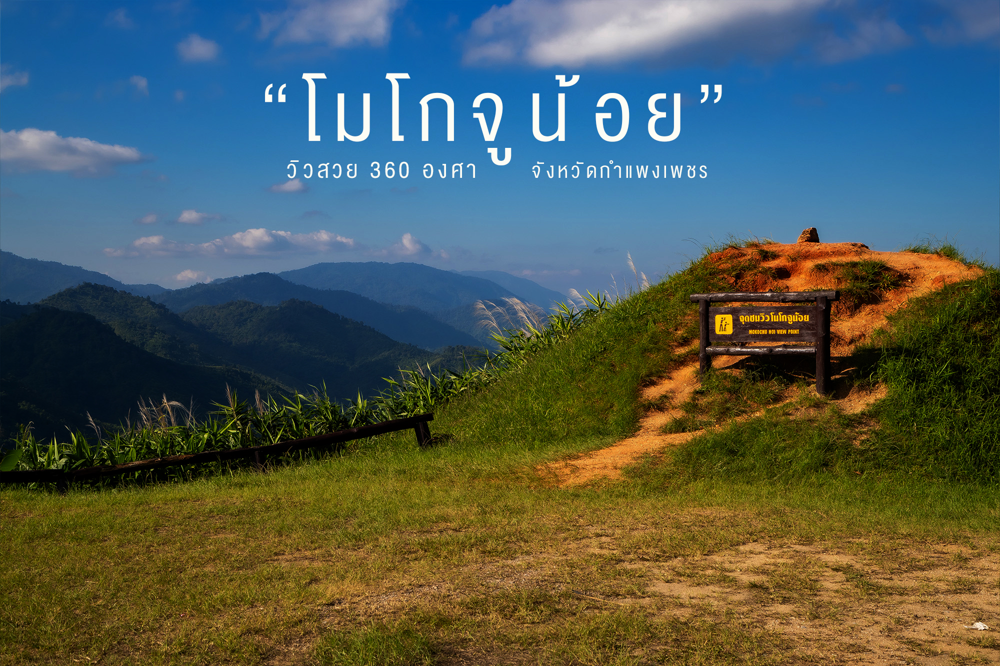
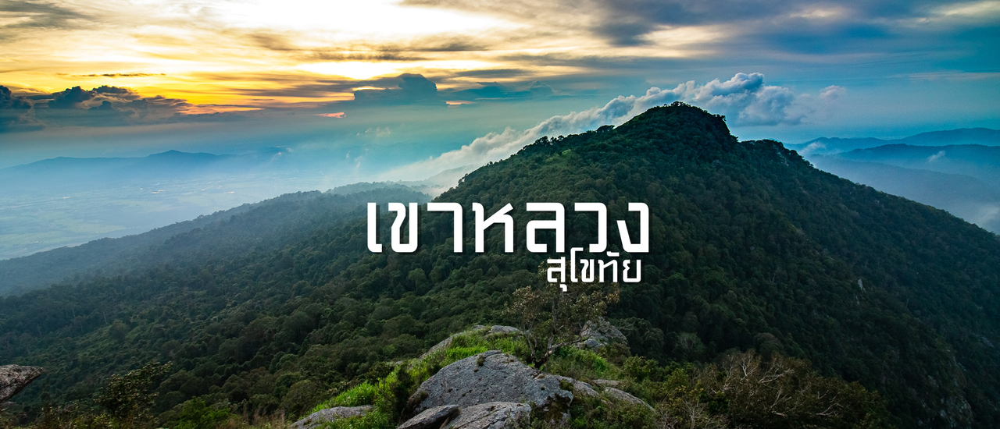
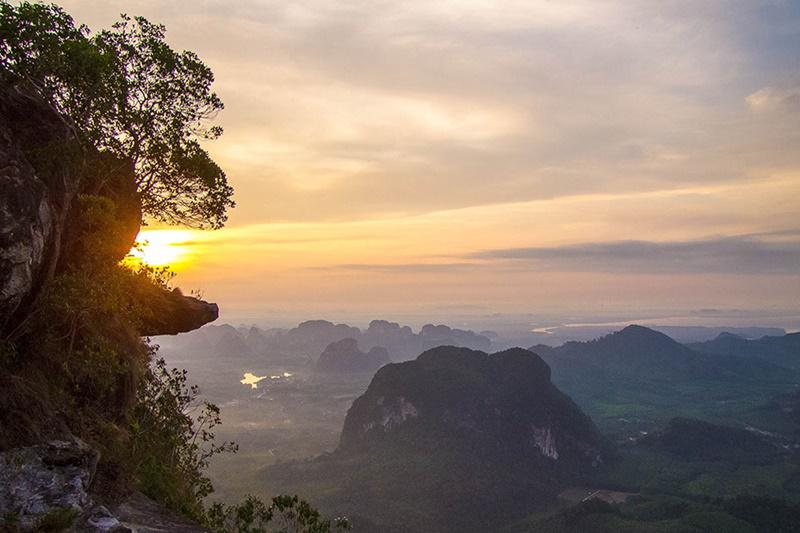

ไฮไลท์: เป็น "โรงเรียนอนุบาลเดินป่า" ของใครหลายคน ทางเดินชัดเจน
มีร้านค้า ร้านอาหาร และสิ่งอำนวยความสะดวกข้างบนครบครัน
ไฮไลท์คือผาหล่มสัก (ดูพระอาทิตย์ตก) และเมเปิ้ลแดง (ช่วงธ.ค.-ม.ค.)
สถานะ: ปกติจะเปิดถึงเดือนพฤษภาคม (ปิดพักป่า มิ.ย. - ก.ย.) ช่วงนี้อากาศเริ่มร้อนแต่ยังเที่ยวได้ครับ
ระยะเวลา: 3 วัน 2 คืน

ไฮไลท์: เป็นภูเขาหินปูนริมทะเลที่ต้อง ปีนป่ายและไต่เชือก จริงจังในช่วงท้าย วิวข้างบนสวยมากเห็นอ่าว 3 อ่าว (อ่าวประจวบ อ่าวมะนาว อ่าวร้อย)
สถานะ: เปิดเฉพาะวันหยุดยาว (3 วันติดกันขึ้นไป) เท่านั้นครับ สำหรับปี 2569 ต้องรอเช็คปฏิทินวันหยุด (เช่น ช่วงสงกรานต์ หรือวันหยุดราชการพิเศษ) ต้องลงทะเบียนหน้างานช่วงเช้า
ระยะเวลา: ไปเช้า-เย็นกลับ (ใช้เวลาขึ้น-ลงประมาณ 2-3 ชม.)

ไฮไลท์: ลานสนสามใบที่ใหญ่ที่สุดในไทย และทุ่งดอกหงอนนาคสีม่วงที่จะบานสะพรั่งในช่วงหน้าฝน ทางเดินค่อนข้างชันและลื่นในช่วงแรก (เนินส่งญาติ)
การเตรียมตัว: เตรียมเสื้อกันฝนและรองเท้าดอกยางลึกๆ ครับ

ไฮไลท์: ยอดเขาที่สูงเป็นอันดับ 3 ของไทย วิวอลังการเห็นยอดเขาหินปูนสลับซับซ้อน
ต้องจองคิวล่วงหน้ายากมาก
สถานะ: ปกติปิดกลางเดือน ก.พ.
ไฮไลท์: ทุ่งหญ้าสีทองบนสันเขา และหัวสิงห์ เป็นจุดชมพระอาทิตย์ตกที่โรแมนติกมาก ทางเดินไม่ยากมากแต่นั่งรถโฟร์วิลเข้าไปโหดหน่อย
สถานะ: ปกติปิดกลางเดือน ก.พ.

ไฮไลท์: สันคมมีด (สันวัดใจ) ที่หวาดเสียวและสวยงาม ทางแคบเดินเรียงเดี่ยว ต้องจองคิวผ่านระบบอุทยานฯ ซึ่งเต็มเร็วมาก
สถานะ: ปกติเปิดช่วงสั้นๆ พ.ย. - ม.ค.

ไฮไลท์: "หินเรือใบ" สัญลักษณ์ของผู้พิชิต เดินไกลมาก (ไป-กลับเกือบ 60 กม.) ใช้เวลา 4-5 วัน ต้องเตรียมร่างกายดีมากๆ

ไฮไลท์: ระยะทางเดินสั้น (ประมาณ 3-4 กม.) แต่ "ชันมาก" ตลอดทาง
ข้างบนมีลานกางเต็นท์วิวสวย สามารถเห็นทะเลหมอกและทุ่งหญ้าเขียวขจี
สถานะ: มักเปิดตลอดปี (อาจมีปิดช่วงสั้นๆ ควรเช็คกับอุทยานฯ รามคำแหง)
เหมาะกับคนอยากทดสอบกำลังขา
ระยะเวลา: 2 วัน 1 คืน

ไฮไลท์: ระยะทาง เดินเท้าประมาณ 3.7 กิโลเมตร (ใช้เวลาเดินขึ้น 2-3 ชั่วโมง) แต่ชันมากตลอดทาง
ในขณะที่ภูเขาอื่นให้วิวหมอกหรือทิวเขา แต่ที่นี่คุณจะได้เห็น "วิวทะเลอันดามันมุมสูง"
แบบ 360 องศา เห็นเกาะห้อง เกาะยาว และภูเขาหินปูนสลับซับซ้อน ตัดกับน้ำทะเลสีฟ้า ซึ่งหาดูได้ยากจากยอดดอยทั่วไป
ระยะเวลา: ไม่มีปิดฤดูกาลเหมือนภูเขาทางภาคเหนือ
ยินดีต้อนรับสู่ HIKING SPOT แพลตฟอร์มรวบรวมข้อมูลเส้นทางปีนเขาและแหล่งท่องเที่ยวธรรมชาติที่ครบถ้วนที่สุด
เป้าหมายของเรา: เรามุ่งมั่นที่จะเป็นศูนย์กลางข้อมูล สำหรับนักปีนเขาและผู้รักธรรมชาติ โดยนำเสนอข้อมูลเชิงลึกที่ผ่านการตรวจสอบและคัดกรองแล้ว ทั้งเรื่องพิกัด GPS, สภาพภูมิประเทศ, ระดับความยากง่าย และอุปกรณ์ที่จำเป็น เพื่อช่วยให้คุณวางแผนการเดินทางได้อย่างแม่นยำและปลอดภัย
ทำไมต้องเลือกเรา?
ข้อมูลแม่นยำ: อัปเดตสถานะภูเขาและฤดูกาลเปิด-ปิดจากหน่วยงานที่เกี่ยวข้อง
ครอบคลุม: รวบรวมเส้นทางตั้งแต่ระดับเดินเล่นชมธรรมชาติ ไปจนถึงยอดเขาสูงเสียดฟ้า
ชุมชนคุณภาพ: พื้นที่แลกเปลี่ยนประสบการณ์จริงจากนักเดินทาง เพื่อข้อมูลที่เป็นปัจจุบันที่สุด
ไม่ว่าเป้าหมายต่อไปของคุณคือที่ไหน ให้ HIKING SPOT ช่วยนำทางคุณไปถึงจุดหมายอย่างปลอดภัย
"ไม่เคยคิดว่าจะปีนเขาไหว จนมาเจอเว็บนี้ครับ! ข้อมูลช่วยให้ผมกล้าตัดสินใจเลือกภูเขาลูกแรกที่เหมาะกับตัวเอง ทำให้ทริปแรกของผมผ่านไปได้ด้วยดี ประทับใจมากครับ"
คุณต้น, มือใหม่หัดเดินป่า ⭐⭐⭐⭐⭐
"ชอบฟีเจอร์ 'ภูเขาสำหรับมือใหม่' มากค่ะ บอกจุดที่ต้องระวังชัดเจน ทำให้ผู้หญิงตัวคนเดียวอย่างเรากล้าแบกเป้ไปเที่ยว ขอบคุณที่ทำให้เราค้นพบงานอดิเรกใหม่นะคะ"
คุณพลอย, นักเดินทางสาย Solo ⭐⭐⭐⭐⭐
"จุดพักแรมแม่นยำมากครับ ช่วยให้ผมคำนวณการใช้น้ำและพลังงานได้ดีเยี่ยม สำหรับสายเทรลระยะไกล เว็บนี้คือดีที่สุดในไทยตอนนี้เลย"
พี่เอก, นักวิ่งเทรลและนักปีนเขา ⭐⭐⭐⭐⭐
"สิ่งที่ชอบที่สุดคือการอัปเดตสถานะ 'ปิด/เปิด' ของอุทยานที่รวดเร็ว ช่วยประหยัดเวลาเช็กข่าวเองไปได้เยอะ แถมพิกัด GPS ตรงเป๊ะ ไม่พาหลงเข้าป่าแน่นอน 555"
คุณแม็กซ์, สายเดินป่าระยะไกล ⭐⭐⭐⭐
หากพบปัญหาในการใช้งาน หรือต้องการคำเเนะนำคุณสามารถส่งข้อความหาพวกเราได้.
38 หมู่ที่ 8 ถนน หาดเจ้าสำราญ
ตำบล นาวุ้ง อำเภอเมืองเพชรบุรี เพชรบุรี 76000
ประเทศไทย
+66 32 708 605 | 664244120@mail.pbru.ac.th
HIKING SPOT เว็บไซต์ของเรา ให้ความสำคัญกับความเป็นส่วนตัวของผู้ใช้งาน อย่างยิ่ง นโยบายความเป็นส่วนตัวนี้จะอธิบายถึงวิธีการที่เราเก็บรวบรวม ใช้ เปิดเผย และปกป้องข้อมูลส่วนบุคคลของคุณเมื่อคุณเข้าใช้งานเว็บไซต์แนะนำภูเขาและเส้นทางปีนเขาของเรา
เราอาจเก็บรวบรวมข้อมูลประเภทต่างๆ เพื่อปรับปรุงบริการและมอบประสบการณ์การใช้งานที่ดีที่สุดให้แก่คุณ ดังนี้: ข้อมูลส่วนบุคคล เมื่อคุณลงทะเบียนสมาชิก สมัครรับข่าวสาร หรือติดต่อเรา เราอาจขอข้อมูลที่ระบุตัวตนได้ | ข้อมูลการใช้งาน เราอาจเก็บข้อมูลเกี่ยวกับวิธีการที่คุณเข้าถึงเว็บไซต์ | ข้อมูลตำแหน่งที่ตั้ง เพื่อให้เราสามารถแนะนำ "ภูเขาใกล้คุณ" หรือเส้นทางปีนเขาในบริเวณที่คุณอยู่ได้ เราอาจขอสิทธิ์เข้าถึงข้อมูลตำแหน่งที่ตั้ง (GPS) ของคุณ (เฉพาะเมื่อคุณอนุญาตเท่านั้น)
การใช้คุกกี้ (Cookies) และเทคโนโลยีติดตาม: เราใช้คุกกี้เพื่อจดจำการตั้งค่าของคุณ (เช่น ภาษาที่เลือก หรือภูเขาที่คุณบันทึกไว้ในรายการโปรด) และเพื่อวิเคราะห์สถิติผู้เข้าชม คุณสามารถตั้งค่าปฏิเสธคุกกี้ได้ผ่านเบราว์เซอร์ของคุณ แต่อาจทำให้ฟีเจอร์บางอย่าง (เช่น การบันทึกเส้นทางโปรด) ใช้งานไม่ได้
เราใช้ข้อมูลของคุณอย่างไร: เรานำข้อมูลที่ได้ไปใช้เพื่อวัตถุประสงค์ดังต่อไปนี้: เพื่อให้บริการ: แนะนำภูเขา, แสดงข้อมูลเส้นทาง, ระดับความยาก และรีวิว | เพื่อการติดต่อ: ส่งอีเมลแจ้งเตือนข่าวสาร หรือตอบกลับข้อซักถามของคุณ | เพื่อวิเคราะห์: ทำความเข้าใจว่าภูเขาลูกไหนได้รับความนิยม เพื่อนำไปปรับปรุงเนื้อหา | เพื่อความปลอดภัย: ตรวจสอบและป้องกันการใช้งานที่ผิดปกติ
การเปิดเผยข้อมูลต่อบุคคลภายนอก: เราจะไม่ขายข้อมูลส่วนบุคคลของคุณให้แก่บุคคลที่สาม อย่างไรก็ตาม เราอาจแบ่งปันข้อมูลในกรณีดังนี้: ผู้ให้บริการ: เช่น ผู้ให้บริการโฮสติ้ง, ระบบส่งอีเมล หรือเครื่องมือวิเคราะห์ (เช่น Google Analytics) ซึ่งช่วยให้เว็บไซต์ทำงานได้ | ข้อกฎหมาย: หากจำเป็นต้องเปิดเผยตามคำสั่งศาลหรือกฎหมายกำหนด
ลิงก์ไปยังเว็บไซต์อื่น: เว็บไซต์ของเราอาจมีลิงก์ไปยังเว็บไซต์ภายนอก (เช่น เว็บอุทยานแห่งชาติ, เว็บจองที่พัก หรือร้านขายอุปกรณ์เดินป่า) เราไม่มีอำนาจควบคุมและไม่รับผิดชอบต่อนโยบายความเป็นส่วนตัวของเว็บไซต์เหล่านั้น ขอให้คุณตรวจสอบนโยบายของเว็บปลายทางด้วยตนเอง
ความปลอดภัยของข้อมูล: เราใช้มาตรการรักษาความปลอดภัยที่เหมาะสมเพื่อป้องกันไม่ให้ข้อมูลของคุณสูญหายหรือถูกเข้าถึงโดยไม่ได้รับอนุญาต แต่อย่าลืมว่าไม่มีวิธีการส่งข้อมูลผ่านอินเทอร์เน็ตใดที่ปลอดภัย 100%
สิทธิของคุณ (PDPA): ภายใต้กฎหมายคุ้มครองข้อมูลส่วนบุคคล (หากบังคับใช้) คุณมีสิทธิ์ที่จะ: ขอเข้าถึง หรือขอรับสำเนาข้อมูลส่วนบุคคลที่เรามีอยู่ | ขอให้แก้ไข หรือลบข้อมูลของคุณออกจากระบบของเรา | ยกเลิกความยินยอมในการประมวลผลข้อมูล
การเปลี่ยนแปลงนโยบาย: เราอาจปรับปรุงนโยบายความเป็นส่วนตัวนี้เป็นครั้งคราว โดยเราจะแจ้งให้ทราบผ่านหน้าเว็บไซต์นี้ และวันที่ "อัปเดตล่าสุด" ด้านบนจะเปลี่ยนไป
ติดต่อเรา: หากคุณมีข้อสงสัยเกี่ยวกับนโยบายความเป็นส่วนตัวนี้ สามารถติดต่อเราได้ที่: อีเมล: 664244120@pbru.ac.th] | ที่อยู่: 38 หมู่ที่ 8 ถนน หาดเจ้าสำราญ ตำบล นาวุ้ง อำเภอเมืองเพชรบุรี เพชรบุรี 76000
หากมีคำถามเกี่ยวกับมาตราการความปลอดภัยของเรา คุณสามารถติดต่อกับพวกเราได้ทันที